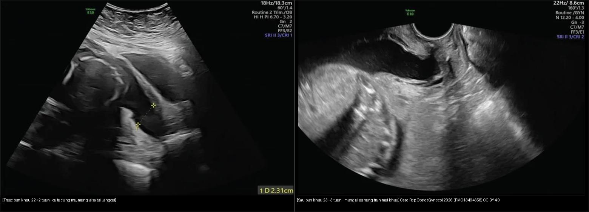
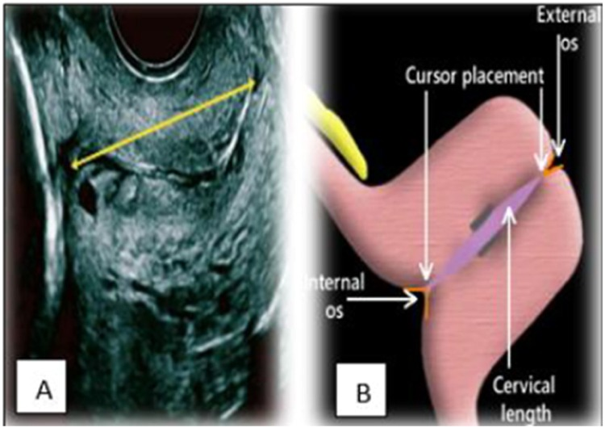
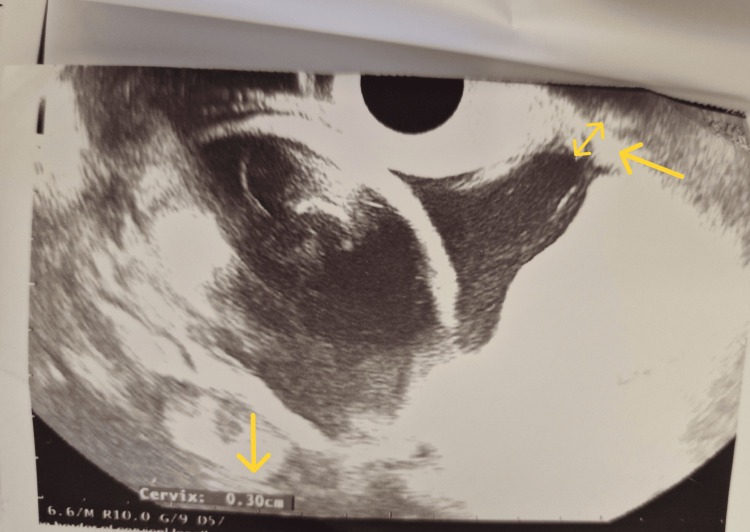
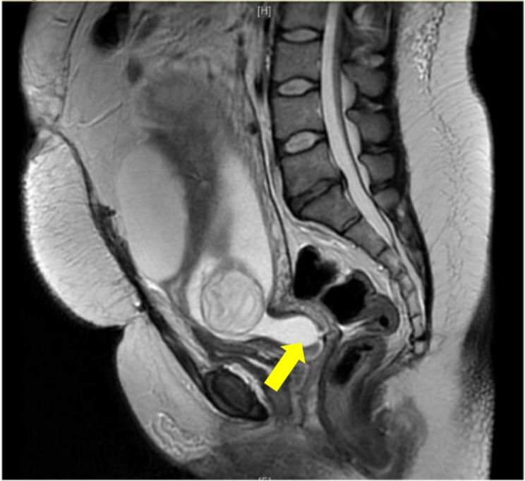
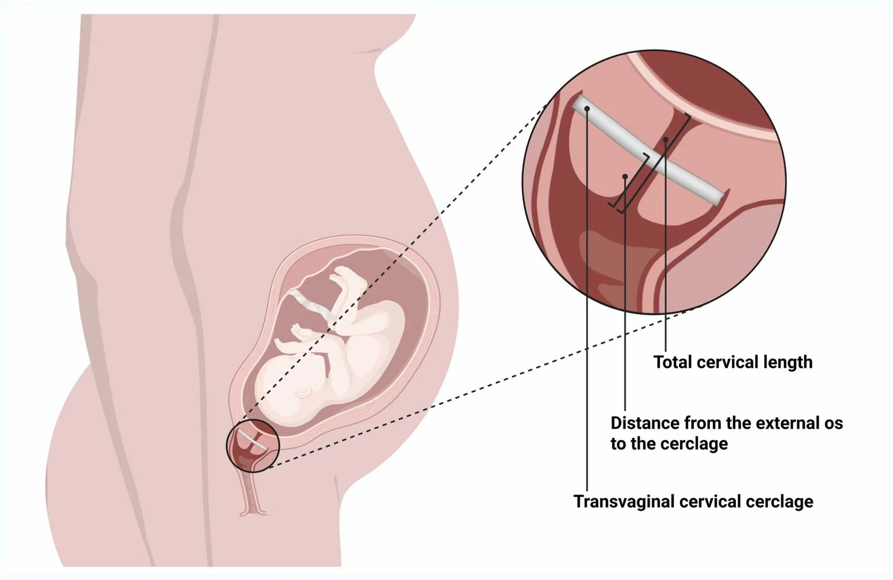

573 — Hở cổ tử cung & bán khâu: theo dõi siêu âm cổ tử cung / Cervical insufficiency & cerclage: sonographic surveillance
Tags: pattern:ho-co-tu-cung pattern:co-tu-cung-ngan vung:co-tu-cung score:CL-25mm protocol:TVUS-co-tu-cung protocol:cerclage
Mức chắc chắn (certainty): tổng hợp y văn (literature synthesis) — nhóm tự biên từ tổng quan mở J Clin Med 2025 (PMC12693418), nghiên cứu thuần tập bán khâu (PMC13586745), ca lâm sàng CC BY (PMC12893400, PMC13494658) và y văn sản khoa; số liệu định lượng lấy nguyên văn từ bài gốc.
1. Tổng quan bệnh học – cơ chế hình ảnh
- Hở cổ tử cung (cervical insufficiency): cổ tử cung mở không đau ở quý II (thường 14–27 tuần) khi không có cơn co tử cung rõ và không do nguyên nhân khác (nhiễm trùng lâm sàng, vỡ ối, dị dạng), dẫn tới sẩy thai muộn/sinh cực non tái diễn. Chiếm 1–2% thai kỳ và 15–20% sẩy thai quý II tái diễn (Baroutis D và cộng sự, J Clin Med 2025, PMC12693418).
- Sinh lý bệnh: cổ tử cung là "van cơ học" gồm chất nền ngoại bào giàu collagen type I/III; khi thoái hóa collagen + viêm (IL-1β, TNF-α, prostaglandin E2) + tải cơ học của thai/thai nhiều → cổ tử cung mềm, ngắn, mở. Vì vậy hình ảnh không phải "khối u" mà là sự kiện theo thời gian (trajectory) — đo một lần có thể bỏ qua giai đoạn thoái triển (Park MI & Park YJ, J Pers Med 2026, PMC13028481).
- TẠI SAO siêu âm thấy được (vật lý): dịch ối trống âm (anechoic) trên siêu âm; cổ tử cung là mô đặc tăng hồi âm, dải cơ–mô xơ. Vì thế màng ối lồi vào ống cổ tử cung tạo hình phễu (funneling) dễ nhận ra trên nền cổ tử cung sáng. Siêu âm đầu dò âm đạo (TVUS) là chìa khóa vì đo được toàn bộ ống cổ tử cung với bàng quang rỗng.
- Ngưỡng định lượng bắt buộc nhớ:
- Cổ tử cung ngắn (short cervix): CL ≤ 25 mm trước 24 tuần. Kèm tiền sử sinh non tự phát < 37 tuần → bán khâu chỉ định theo siêu âm (ultrasound-indicated cerclage): giảm sinh non < 35 tuần 28,4% (71/250) so với 41,3% (105/254), RR 0,70 (KTC 95% 0,55–0,89) (Berghella và cộng sự, trích trong PMC12693418).
- Progesterone ÂM ĐẠO khi CL ≤ 20 mm (có tính quyết định) / 21–25 mm (cân nhắc): giảm sinh non < 33 tuần 31%, RR 0,69 (KTC 95% 0,55–0,88), NNT = 14; với CL ≤ 15 mm (thử nghiệm Fonseca) giảm 44% sinh non < 34 tuần (200 mg progesterone vi hạt/ngày).
- Phối hợp bán khâu + progesterone ở người có tiền sử sinh non + CL < 25 mm: RR 0,64 (KTC 95% 0,42–0,97), NNT 6, rõ nhất khi CL < 15 mm.
- Tỉ lệ thành công theo loại chỉ định (PMC12693418): tiền sử (history-indicated, 12–16 tuần) 70–90%; theo siêu âm 75–85%; cấp cứu/khi thăm khám (emergency/rescue, khi đã mở ≥ 1 cm + xóa ≥ 50% ở 14–27 tuần) chỉ 35–70%.
- Thai nhiều (song thai): KHÔNG có lợi ích từ các can thiệp của đơn thai (RR 0,99–1,04); bán khâu theo tiền sử ở song thai có thể hại: sinh non < 35 tuần RR 2,15 (KTC 95% 1,15–4,01), NNH 6; progesterone âm đạo (PREDICT, n = 500) và 17-OHPC đều không hiệu quả.
- Thử nghiệm SuPPoRT (n = 386): bán khâu, vòng nâng (pessary) và progesterone không khác biệt có ý nghĩa (p = 0,4) ở cổ tử cung ngắn — chọn theo từng ca, chưa có bằng chứng tương đương chính thức.
- Khi dọa sinh non do cổ tử cung đã mở > 2–3 cm: chọc ối (amniocentesis) để loại trừ nhiễm trùng trong ối trước khi đặt bán khâu cấp cứu.
- Khám siêu âm động (dynamic): ấn đáy tử cung nhẹ/cho ho → lộ funneling hoặc ngắn thêm khi nghỉ không thấy; sự hiện diện và mức độ funnelling có giá trị tiên lượng riêng, kể cả khi CL còn trong ngưỡng.
Ghi chú nguồn: mọi số liệu trên đọc trực tiếp từ PMC12693418 (CC BY 4.0), PMC13586745 và PMC11881493; không suy diễn thêm.
2. Mẫu hình + chẩn đoán phân biệt theo bối cảnh (Gamut)
- Mẫu hình chính trên TVUS: (1) cổ tử cung ngắn đơn thuần (hình thái thẳng, không phễu); (2) funneling — màng ối chui vào lỗ trong tạo chữ U / Y / V, kèm "phần cổ còn lại" (residual CL); (3) mở lỗ ngoài + màng ối lồi (bulging membranes); (4) hình thái sau bán khâu — mũi khâu ở trên lỗ ngoài, đo khoảng cách lỗ ngoài–mũi khâu và chiều dài cổ tử cung tổng.
- Gamut theo bối cảnh lâm sàng (không chỉ theo hình ảnh):
- Có tiền sử sẩy muộn/sinh cực non tái diễn → hở cổ tử cung (chẩn đoán theo bệnh sử + CL).
- Đau co tử cung đều, đau lưng, ra dịch nhầy máu → chuyển dạ sinh non (preterm labor) — không phải hở cổ tử cung; xử trí giảm co/tăng trưởng phổi.
- Sốt, ối đục, CRP tăng, dịch âm đạo hôi → viêm màng ối/ nhiễm trùng trong ối (intra-amniotic infection): chống chỉ định bán khâu; chọc ối chẩn đoán.
- Rỉ ối trước 37 tuần → vỡ ối non (PPROM); màng ối không còn nguyên là cạm bẫy của "cổ tử cung ngắn".
- Dị dạng tử cung (vách ngăn, một sừng, dính buồng)/u xơ dưới niêm mạc/polyp lớn cổ → thay đổi cơ học (xem 571, 528).
- Tiền sử cắt côn (conization)/kéo dài dùng thuốc/cắt cổ tử cung bán phần, thai sau cắt bán phần cổ (radical trachelectomy) → cổ tử cung bị rút ngắn sẵn, ngưỡng can thiệp khác.
- Song thai/đa thai → phân biệt "cổ ngắn sinh lý do căng" với hở cổ tử cung thật; không áp dụng phác đồ đơn thai.
- Gợi nhớ tiếp cận: hỏi cơn co? → tìm nhiễm trùng/PPROM? → đo CL + funnelling → xét tiền sử + số thai → mới chọn progesterone / bán khâu / theo dõi.
3. Bảng so sánh phân biệt (ma trận đối chiếu)
| Thực thể (entity) | Hình ảnh điển hình | Chốt vào (rule-in) | Chốt loại (rule-out) | Gợi ý xác nhận |
|---|---|---|---|---|
| Cổ tử cung ngắn đơn thuần (asymptomatic short cervix) | TVUS: CL ngắn, hình thái thẳng, không phễu, không đau | CL ≤ 25 mm trước 24 tuần (≤ 20 mm quyết định) | Màng ối lồi/lỗ ngoài mở → không còn "đơn thuần" | TVUS lặp; progesterone nếu CL ≤ 20 mm |
| Hở cổ tử cung theo tiền sử (history-indicated) | CL có thể bình thường ở đầu thai kỳ; mở tiến triển không đau | Tiền sử ≥ 1–2 lần sẩy muộn/sinh cực non tự phát + mở không đau | Sốt/co tử cung → nghĩ chuyển dạ/nhiễm trùng | Bán khâu 12–16 tuần (thành công 70–90%) |
| Bán khâu chỉ định theo siêu âm (ultrasound-indicated) | CL ≤ 25 mm + funneling, có tiền sử sinh non < 37 tuần | CL ≤ 25 mm trước 24 tuần + tiền sử | Không tiền sử → cân nhắc progesterone thay vì mổ | RR 0,70 cho sinh non < 35 tuần |
| Màng ối lồi, cổ tử cung đã mở (physical-exam/rescue) | Màng ối lồi tới lỗ ngoài, lỗ ngoài mở; funneling lớn/rất ngắn | Mở ≥ 1 cm + xóa ≥ 50% ở 14–27 tuần, không co rõ | Nhiễm trùng trong ối/đang chuyển dạ → không bán khâu | Chọc ối loại trừ nhiễm trùng; bán khâu cấp cứu (35–70%) |
| Nhiễm trùng trong ối (intra-amniotic infection) | Ối đục, màng ối dày/bất thường, funneling + sốt/tăng CRP | Sốt + CRP tăng + dịch ối bất thường | Không sốt/không hội chứng đáp ứng → khó loại trừ hoàn toàn | Chọc ối: cấy, glucose, IL-6; kháng sinh |
| Chuyển dạ sinh non (preterm labor) | Cổ tử cung mở theo cơn co, funneling xuất hiện động | Cơn co đều + mở/xóa tiến triển | Không co, chỉ ngắn thụ động → nghĩ hở cổ tử cung | Cơn co đồ (tocodynamometry), theo dõi động |
| Vỡ ối non (PPROM) | Bể ối nhỏ, màng ối không liên tục, dịch "vỡ" | Bể ối + dịch ối chảy ra ngoài nhiều | Không bể ối → không phải PPROM | Nghiệm pháp soi mỏ vịt, nitrazine/IGFBP-1 |
| Hình thái sau bán khâu | Mũi khâu ngang trên lỗ ngoài; đo khoảng cách lỗ ngoài–khâu | Có mũi khâu + cổ tử cung giữ được chiều dài | Ngắn dần dưới khâu → nguy cơ thất bại | Đo khoảng cách lỗ ngoài–mũi khâu + tổng CL (dự báo tốt nhất) |

Trái: siêu âm 22+2 tuần cổ tử cung mở, màng ối lồi tới lỗ ngoài. Phải: siêu âm 23+3 tuần sau đặt bán khâu McDonald, màng ối đã nâng trên mũi khâu. Nguồn: Shir ZK và cộng sự, Case Rep Obstet Gynecol 2026 (PMC13494658), CC BY 4.0; ghép letterbox bằngtools/make_composite.py.
Đo cổ tử cung chuẩn — dấu hiệu nhìn trước khi đo
- Ảnh A (kỹ thuật): đặt cữ đo từ lỗ trong (internal os) tới lỗ ngoài (external os) dọc trục ống cổ tử cung; ống cổ tử cung là dải tăng hồi âm giữa hai đầu, dịch ối/ kênh cổ trống âm giúp nhận ranh giới.
- Ảnh B (sơ đồ): vị trí con trỏ tại lỗ trong và lỗ ngoài; đo lần 3, lấy trị số ngắn nhất đáng tin; luôn bắt đầu với bàng quang rỗng để tránh kéo dài giả.

Nữ 26 tuần: (A) TVUS đo chiều dài cổ tử cung (đường vàng) từ lỗ trong tới lỗ ngoài; (B) sơ đồ vị trí con trỏ tại lỗ trong/lỗ ngoài. Nguồn: Mahale N và cộng sự, AJOG Glob Rep 2025 (PMC12452594), CC BY 4.0.
TVUS 23 tuần: funneling (màng ối chui vào ống cổ tử cung, mũi tên vàng) + cổ tử cung đo được 0,30 cm (3 mm) — cổ tử cung cực ngắn. Nguồn: Christakopoulos D và cộng sự, Cureus 2026 (PMC12893400), CC BY 4.0.4. Protocol chụp + hệ phân độ/ngưỡng xử trí
- Siêu âm đầu dò âm đạo (TVUS) — tiêu chuẩn: bàng quang rỗng, tư thế sản khoa; đầu dò đặt ở cùng đồ âm đạo trước; tránh ép quá mạnh (làm dài giả cổ tử cung); đo 3 lần lấy trị số ngắn nhất; đo từ lỗ trong → lỗ ngoài; ghi nhận funneling (U/Y/V), phần cổ còn lại, và cử động động (ấn đáy/ho). Siêu âm đường bụng (full bladder) chỉ là bổ trợ.
- Lịch sàng lọc: tiền sử sinh non tự phát < 37 tuần → TVUS mỗi 1–2 tuần từ 16–24 tuần; tiền sử sẩy muộn lặp lại → cân nhắc bán khâu theo tiền sử ở 12–16 tuần thay vì chờ ngắn.
- Phân tầng theo ngưỡng (tổng hợp PMC12693418):
- CL ≤ 25 mm + tiền sử sinh non < 37 tuần (trước 24 tuần) → bán khâu chỉ định theo siêu âm ± progesterone (Grade A).
- CL ≤ 20 mm không tiền sử → progesterone âm đạo ± theo dõi (Grade A); 21–25 mm → cân nhắc progesterone.
- Mở ≥ 1 cm + xóa ≥ 50% (14–27 tuần, không co rõ) → bán khâu cấp cứu sau khi loại trừ nhiễm trùng bằng chọc ối (Grade C, thành công 35–70%).
- Đa thai → không progesterone/bán khâu/vòng nâng thường quy (bán khâu có thể hại: RR 2,15).
- Kỹ thuật bán khâu: McDonald (mũi khâu ví quanh cổ tử cung ở mức lỗ trong, dễ làm/dễ tháo) vs Shirodkar (bóc tách bàng quang, đặt cao hơn); TAC (transabdominal cerclage) khi thất bại nhiều lần qua ngả âm đạo. Sau đặt: mạnh nhất để tiên lượng là khoảng cách lỗ ngoài–mũi khâu và chiều dài cổ tử cung tổng còn lại (Hulshoff CC và cộng sự, PMC13586745).
- Biến chứng cần nhớ: vỡ ối non (PPROM), viêm màng ối (chorioamnionitis), chảy máu, đau, kích ứng. Bán khâu không "bảo hiểm" tuyệt đối — theo dõi tiếp bằng TVUS.
- MRI: không thường quy; hữu ích khi siêu âm hạn chế/không rõ hoặc đánh giá thai nhi–phần phụ kèm (ca MRI phát hiện cổ tử cung mất đo được do funneling tới lỗ ngoài, sau đó bán khâu cấp cứu — Schmidt-Swartz J và cộng sự, PMC11881493).
flowchart TD
A["Thai phụ nguy co / co tu cung ngan"] --> B{"Tien su sinh non tu phat < 37 tuan?"}
B -->|"Khong"| C["TVUS: CL + funneling"]
B -->|"Co"| D["TVUS moi 1-2 tuan tu 16-24 tuan"]
C --> E{"CL <= 25 mm truoc 24 tuan?"}
D --> E
E -->|"Khong"| F["Theo doi tiep; danh gia yeu to khac"]
E -->|"Co, khong tien su"| G{"CL <= 20 mm?"}
G -->|"Co"| H["Progesterone am dao (RR 0,69; NNT 14)"]
G -->|"21-25 mm"| I["Can nhac progesterone"]
E -->|"Co + tien su sinh non"| J{"Da mo >= 1 cm / mang oi loi?"}
J -->|"Chua"| K["Ban khau chi dinh theo sieu am (RR 0,70)"]
J -->|"Roi"| L["Choc oi loai tru nhiem trung"]
L -->|"Am tinh"| M["Ban khau cap cuu (35-70%)"]
L -->|"Duong tinh"| N["Khang sinh; KHONG ban khau"]
K --> O["Theo doi sau: khoang cach lo ngoai-mui khau + tong CL"]
M --> O
5. Biến thể bình thường và cạm bẫy
- Bàng quang đầy làm dài giả cổ tử cung → luôn đo với bàng quang rỗng; đo lại nếu thấy số "đẹp" bất thường.
- Ép đầu dò quá mạnh làm cổ tử cung "dài ra" giả tạo; áp lực nhẹ, để cổ tử cung tự nhiên.
- Nếp niêm mạc/kênh cổ tử cung có dịch nhầy dễ đọc nhầm funnelling — phân biệt bằng hình chữ U nối liền khoang ối và cử động động.
- "Một lần đo" không đủ: cổ tử cung có thể ngắn tạm thời rồi hồi phục; khung khái niệm hiện đại nhấn quỹ đạo theo thời gian (trajectory) thay vì nhãn cố định (PMC13028481) — luôn đo lại và xem chuỗi.
- Song thai: cổ tử cung ngắn thường hơn và tiên lượng khác — đừng áp ngưỡng đơn thai; bán khâu có thể làm tăng sinh non (RR 2,15).
- Đừng bỏ sót nguyên nhân thực thể: dị dạng tử cung, u xơ dưới niêm mạc, polyp cổ, thai sau cắt bán phần cổ; hình ảnh cổ tử cung chỉ là một phần.
- Bán khâu không loại trừ nhiễm trùng: màng ối đã lồi + sốt/CRPhs tăng → chọc ối trước, tránh "bán khâu vào ổ nhiễm trùng".
- Cạm bẫy từ chối can thiệp: bệnh nhân có tiền sử + CL ≤ 25 mm mà chỉ theo dõi → mất NNT 6–14; ngược lại, người không tiền sử, CL 21–25 mm mà mổ ngay → can thiệp quá mức.
6. Tự lượng giá — Blind Quiz
Ca 1 — Thai 22 tuần, đo chiều dài cổ tử cung. Đọc ảnh trước.
- Gợi ý lâm sàng (clinical context): khám thai định kỳ, không đau, không ra dịch.
- Câu hỏi: Đo từ đâu tới đâu? Bàng quang nên rỗng hay đầy? Ngưỡng nào gọi là cổ tử cung ngắn?
Bấm để hiện đáp án (findings + chẩn đoán)
- Dấu hiệu (findings): cữ đo chạy dọc ống cổ tử cung từ lỗ trong (A) tới lỗ ngoài; sơ đồ (B) cho thấy vị trí con trỏ.
- Chẩn đoán (diagnosis): kỹ thuật đo chuẩn — bàng quang rỗng, đo ít nhất 3 lần, lấy trị số ngắn nhất; CL ≤ 25 mm trước 24 tuần = cổ tử cung ngắn. Ở người không tiền sử, ≤ 20 mm là ngưỡng quyết định dùng progesterone; 21–25 mm cân nhắc.
- Nguồn ảnh: Mahale N và cộng sự, AJOG Glob Rep 2025 (PMC12452594), CC BY 4.0.
Ca 2 — Thai 23 tuần, có funneling. Đọc ảnh trước.
- Gợi ý lâm sàng: theo dõi cổ tử cung ngắn; không sốt, không co tử cung rõ.
- Câu hỏi: Mô tả hình phễu? Đo được bao nhiêu? Xử trí nếu có tiền sử sinh non < 37 tuần?
Bấm để hiện đáp án (findings + chẩn đoán)
- Dấu hiệu (findings): funneling — màng ối chui vào ống cổ tử cung (mũi tên vàng) hình chữ U; cổ tử cung đo được 0,30 cm (3 mm).
- Chẩn đoán (diagnosis): cổ tử cung cực ngắn kèm funnelling. Nếu có tiền sử sinh non tự phát < 37 tuần → bán khâu chỉ định theo siêu âm (giảm sinh non < 35 tuần RR 0,70) ± progesterone; nếu không tiền sử → progesterone âm đạo (CL ≤ 20 mm).
- Nguồn ảnh: Christakopoulos D và cộng sự, Cureus 2026 (PMC12893400), CC BY 4.0.
Ca 3 — Thai 22 tuần màng ối lồi; xem trước rồi mở đáp án.
- Gợi ý lâm sàng: mở cổ tử cung không đau, màng ối nhìn thấy ở lỗ ngoài.
- Câu hỏi: Hình trái là gì? Trước khi bán khâu cấp cứu cần làm gì? Hình phải xác nhận điều gì?
Bấm để hiện đáp án (findings + chẩn đoán)
- Dấu hiệu (findings): trái = TVUS trước bán khâu (22+2 tuần) cổ tử cung mở, màng ối lồi tới lỗ ngoài; phải = TVUS sau bán khâu (23+3 tuần) màng ối đã nâng trên mũi khâu.
- Chẩn đoán (diagnosis): hở cổ tử cung thể màng ối sa ra ngoài → bán khâu cấp cứu (rescue cerclage); tỉ lệ thành công 35–70%; phải chọc ối loại trừ nhiễm trùng trước (chống chỉ định: nhiễm trùng, chảy máu, chuyển dạ, thai chết/dị dạng nặng).
- Nguồn ảnh: Shir ZK và cộng sự, Case Rep Obstet Gynecol 2026 (PMC13494658), CC BY 4.0 (ảnh ghép letterbox).
Ca 4 — MRI phát hiện bất thường "tình cờ". Đọc ảnh trước. (ca nguyên văn: MRI vì u nang phần phụ)

- Gợi ý lâm sàng (nguyên văn): nữ 34 tuổi, 19 tuần, MRI để đánh giá u nang phần phụ lớn; không tiền sử cổ tử cung ngắn.
- Câu hỏi: Tìm bất thường ngoài u nang? Nó có ý nghĩa gì? Bước tiếp theo?
Bấm để hiện đáp án (findings + chẩn đoán)
- Dấu hiệu (findings): MRI T2 xoay dọc cho thấy màng ối chui qua cổ tử cung, cổ tử cung không đo được (mũi tên) — funneling tới lỗ ngoài.
- Chẩn đoán (diagnosis): cổ tử cung không đo được (unmeasurable cervix) phát hiện tình cờ trên MRI; siêu âm xác nhận cổ tử cung giãn, không đo được → bán khâu cấp cứu. Ca gốc hoàn toàn không có tiền sử sẩy muộn → minh họa "một lần đo/ca bất thường phải hành động ngay".
- Nguồn ảnh: Schmidt-Swartz J và cộng sự, BMC Pregnancy Childbirth 2025 (PMC11881493), CC BY-NC-ND 4.0 — nguyên bản, không ghép.
Ca 5 — Đo gì sau khi đặt bán khâu? Đọc ảnh trước.

- Gợi ý lâm sàng: bệnh nhân đã đặt bán khâu, cần theo dõi.
- Câu hỏi: Kể tên các số đo trong sơ đồ? Số nào tiên lượng mạnh nhất?
Bấm để hiện đáp án (findings + chẩn đoán)
- Dấu hiệu (findings): sơ đồ mũi khâu quanh cổ tử cung + khoảng cách lỗ ngoài–mũi khâu và chiều dài cổ tử cung tổng.
- Chẩn đoán (diagnosis): theo dõi sau bán khâu; khoảng cách lỗ ngoài–mũi khâu và tổng chiều dài cổ tử cung còn lại là yếu tố tiên lượng mạnh nhất cho sinh non (Hulshoff CC và cộng sự, PMC13586745). Mũi khâu đặt càng cao/đủ dài còn lại càng tốt.
- Nguồn ảnh: Hulshoff CC và cộng sự, Eur J Obstet Gynecol Reprod Biol X 2026 (PMC13586745), CC BY 4.0.
Bài liên quan chéo
- 500 – Tổng quan Vú & Sản Phụ khoa
- 571 – Sẩy thai tái diễn: tiếp cận hình ảnh tử cung
- 550 – Thai sớm & thai ngoài tử cung
- 560 – Nhau cài răng lược (PAS) & cấp cứu sản khoa
- 566 – Song thai: màng đệm/màng ối & TTTS/TAPS
- 528 – Dị dạng tử cung bẩm sinh: ESHRE/ESGE
Ảnh
- Tên file:
573_ho-co-tu-cung_slug_Modality_SourceID.jpg. Nguồn + giấy phép từng ảnh trongimages/CREDITS.md. - Ảnh CC BY 4.0 cho phép tải/ghép (ghi nguồn); ảnh CC BY-NC-ND 4.0 (PMC11881493) dùng nguyên bản, không ghép.
- AuntMinnie (https://www.auntminnie.com): paywall — chỉ dẫn link, không tải.
Không dùng để chẩn đoán độc lập khi chưa có người hướng dẫn (Disclaimer y tế).